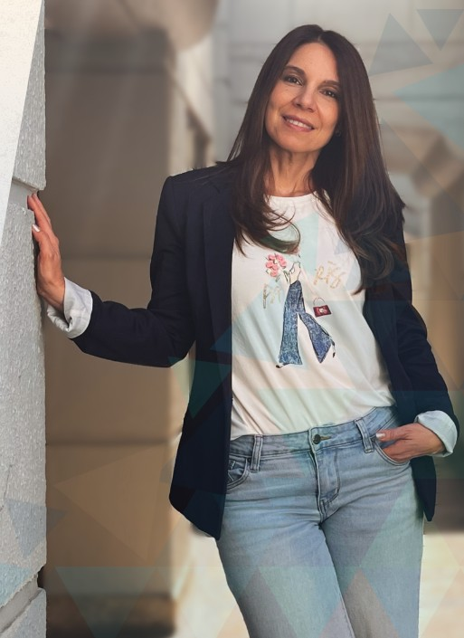
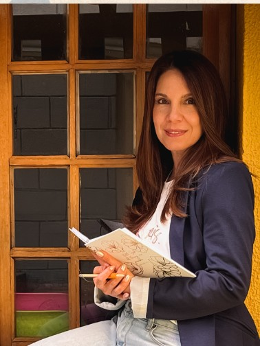
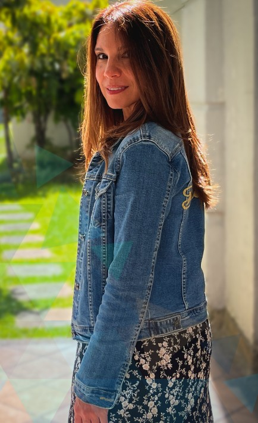
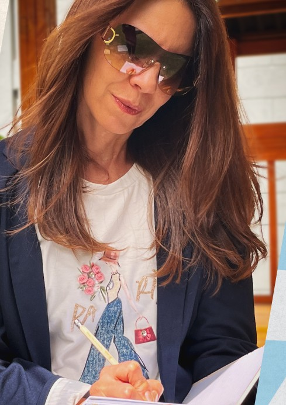
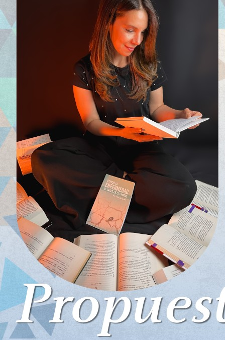
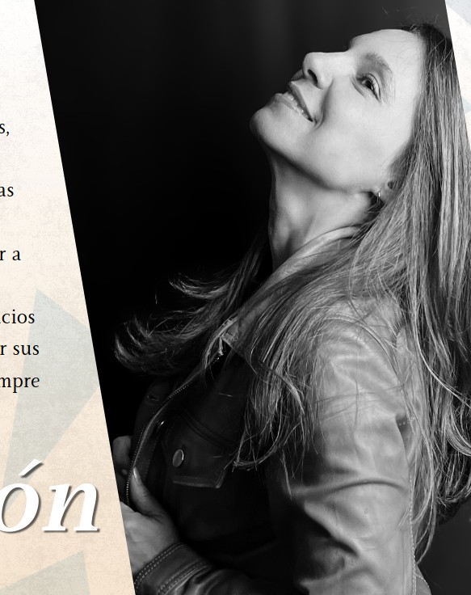

Biografía

Bogotá, Colombia
Anik Jiménez Marulanda, escritora colombiana radicada en Bogotá, es licenciada en Biblia y Teología, administradora de empresas y cuenta con estudios en escritura creativa.
Durante su infancia en Cuba nació su amor por la literatura y el sueño de convertirse en autora. En 2020 publicó su primer libro, Cuando la enfermedad se cruzó en el camino, y en 2023 participó con su obra en la Feria Internacional del Libro de Bogotá.
Tras enfrentar múltiples diagnósticos y cirugías relacionadas con el cáncer, escribió su segunda obra, Las cicatrices que aprendí a amar, en la que comparte, desde una voz cercana y acompañada por su fe en Dios, las enseñanzas de este proceso y herramientas para pacientes oncológicos, cuidadores y familiares.
Anik está convencida de que cada experiencia puede tener un propósito y busca transformar sus aprendizajes en palabras que inspiren, acompañen y alumbren el camino de quienes atraviesan situaciones similares.
Valores
Fe
Confiar en Dios como fuente de propósito, esperanza y fortaleza.
Compasión
Mirar el dolor humano con sensibilidad, amor y sin juzgar.
Autenticidad
Escribir desde la verdad, la experiencia y una voz propia.

Empatía
Conectar con las historias y emociones de los demás desde la comprensión.
Resiliencia
Transformar las dificultades en aprendizaje, crecimiento y nuevas oportunidades.
Servicio
Poner las palabras al servicio de quienes necesitan inspiración y compañía.

Misión
Crear, a través de diversos géneros literarios, historias que inspiren y acompañen a las personas en su caminar, compartiendo desde la experiencia de vida y la fe en Dios una mirada de esperanza, resiliencia y sentido ante la existencia.
Visión
Consolidarse como una voz literaria versátil y auténtica, capaz de explorar con honestidad y sensibilidad las profundidades del corazón humano, abordando la fe, el dolor, el amor, la esperanza y la fortaleza interior. Crear una obra que trascienda géneros, fronteras y generaciones, y que encuentre en cada lector un espacio para conmover, inspirar y dejar una huella perdurable.


Propuesta
La propuesta literaria de Anik Jiménez Marulanda se caracteriza por una voz versátil, sensible y auténtica. Su escritura explora distintas dimensiones de la experiencia humana a través de la ficción, la aventura, la poesía, la reflexión y las historias de vida.
Más que limitarse a un solo tema, busca crear experiencias que conecten con el lector desde distintas emociones y perspectivas. El propósito es contar historias que entretengan, conmuevan e inspiren, integrando a menudo miradas de fe, esperanza y sentido.
- Ficción Historias y personajes que exploran la imaginación, las emociones y la complejidad humana.
- No ficción Relatos que invitan a descubrir nuevos mundos, enfrentar desafíos y vivir experiencias extraordinarias.
- Poesía Palabras que transforman emociones y pensamientos en sensibilidad y belleza.
- Historias de vida Narraciones inspiradas en experiencias humanas que permiten conectar, reflexionar y encontrar sentido.
- Reflexión y fe Textos que abordan la vida con una mirada de esperanza, propósito y confianza en Dios.
Proyección
Anik Jiménez Marulanda proyecta su carrera hacia la consolidación de una voz literaria versátil, auténtica y en constante evolución, ampliando su obra hacia nuevos géneros, historias y públicos, dentro y fuera de Colombia.
Su proyección contempla el desarrollo y publicación de nuevas obras de ficción, aventura, poesía y narrativa, así como la construcción de una trayectoria literaria que le permita llegar a lectores dentro y fuera del país.
